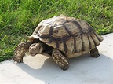

Las tortugas (Testudines) o quelonios (Chelonia) son un orden de reptiles (Sauropsida) caracterizados por tener un tronco ancho y corto, y un caparazón que protege los órganos internos. Características Detalle del rostro de Trachemys scripta elegans, galápago de Florida La característica más importante del esqueleto de las tortugas es que una gran parte de su columna vertebral está soldada a la parte dorsal del caparazón. El esqueleto hace que la respiración sea imposible por movimiento de la caja torácica; se realiza principalmente por la contracción de los músculos abdominales modificados que funcionan de modo análogo al diafragma de los mamíferos y por movimientos de bombeo de la faringe.[2] Aunque carecen de dientes, tienen un pico córneo que recubre su mandíbula, parecido al pico de las aves.